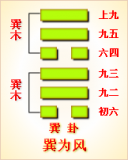

<!DOCTYPE html PUBLIC "-//W3C//DTD XHTML 1.0 Transitional//EN" "http://www.w3.org/TR/xhtml1/DTD/xhtml1-transitional.dtd">

<html xmlns="http://www.w3.org/1999/xhtml">
<head>
<meta content="text/html; charset=utf-8" http-equiv="Content-Type"/>
<title>周易第五十七卦：巽卦 巽为�?巽上巽下原文解释翻译-周易-国学�?/title>
<meta content="周易,巽卦,巽为�?巽上巽下" name="keywords"/>
<meta content="周易,巽卦,巽为�?巽上巽下，周易第五十七卦：巽�?巽为�?巽上巽下解释翻译�?（巽为风）巽上巽�?《巽》：小亨。利有攸往。利见大人�?初六，进退，利武人之贞�?九二，巽在床下，用史巫纷若，吉，无咎�?九三，频巽，吝�?六四，悔亡，田获三品�?九五�? name="description"/>
<link href="css.css" media="screen" rel="stylesheet" type="text/css"/>
</head>
<body>
<div class="gxlayout">
</div>
<div class="gxlayout">
<div class="ihead">
<div class="title"><a>周易</a></div>
<ul class="more fl">
<li>当前位置:<a>国学梦首�?/a> &gt; <a>国学经典</a> &gt; <a>经部</a> &gt; <a>四书五经</a> &gt; <a>周易</a> &gt;  周易第五十七卦：巽卦 巽为�?巽上巽下原文解释翻译</li>
</ul>
</div>
<div class="gxbl fl">
<div class="latitle">

<h1>周易第五十七卦：巽卦 巽为�?巽上巽下</h1>
<div class="lainfo"><span>作者：佚名</span> <span>全集�?a>周易</a></span> <span>来源：网�?/span> <span>[<a rel="nofollow" target="_blank">挑错/完善</a>]</span></div>
</div>
<div class="lacontent">
<div class="clearfix"></div>
<p style="text-align:center"></p>
<p style="text-align:center"><a>周易第五十七卦详�?/a></p>
<p style="text-align:center"><a>第五十七卦初六爻详解</a>　<a>第五十七卦九二爻详解</a>　<a>第五十七卦九三爻详解</a></p>
<p style="text-align:center"><a>第五十七卦六四爻详解</a>　<a>第五十七卦九五爻详解</a>　<a>第五十七卦上九爻详解</a></p>
<p><strong><a target="_blank">周易</a>第五十七�?�?巽为�?巽上巽下</strong></p>
<p>巽：小亨，利攸往，利见大人�?/p>
<p>彖曰：重巽以申命，刚巽乎中正而志行。柔皆顺乎刚，是以小亨，利有攸往，利见大人�?/p>
<p>象曰：随风，�?君子以申命行事�?/p>
<p>初六：进退，利武人之贞。象曰：进退，志疑也�?利武人之贞，志治也�?/p>
<p>九二：巽在牀（chuáng）下。用史巫纷若，吉无咎。象曰：纷若之吉，得中也�?/p>
<p>九三：频巽，吝。象曰：频巽之吝，志穷也�?/p>
<p>六四：悔亡，田获三品。象曰：田获三品，有功也�?/p>
<p>九五：贞吉悔亡，无不利。无初有终，先庚三日，后庚三日，吉。象曰：九五之吉，位正中也�?/p>
<p>上九：巽在牀（chuáng）下，丧其资斧，贞凶。象曰：巽在牀（chuáng）下，上穷也。丧其资斧，正乎凶也�?/p>
<p><strong><a href="57_巽卦.html" target="_blank">巽卦</a>卦象，巽为风卦的象征意义</strong></p>
<p>巽为风，八卦中巽的符号为“”。八卦中巽卦的符号的产生，是古人在生产实践中，看到大雨即将来临之前，往往有大风刮来。就在这山雨欲来风满楼的时刻，天空中有着一层又一层厚厚实实的乌云在翻滚，云下又有着一股接一股的风在吹动。于是用“二”代表那一层又一层的乌云，而以�?-”代表云层之下一股又一股的风。合在一起，形成了“”这样的符号，以象征风�?/p>
<p>巽卦初爻为阴爻，二阳爻在上。巽�?a href="01_乾卦.html" target="_blank">乾卦</a>初爻变阴而来，乾为金玉，故作生意能获三倍巨利。巽为震的旁通卦，震阳决躁，故为躁卦。由巽卦卦象、爻象、爻位还可悟出如下象意：外刚内柔、整齐、传达、生意、营利、无孔不入、钻空子、新鲜、言语、捷报、举荐、奔波、薄情、忧疑、烦躁、权谋、不果断等�?/p>
<p>巽卦所代表的人物是：长女、秀士、寡妇之人，山林仙道之人�?/p>
<p>巽卦所代表的动物：鸡、百禽、山林中之禽、虫�?/p>
<p>在静物为：与木材有关的物品，裤带、线、绳子之类的东西，还指旗秆、长条桌柜、床、标枪、笔、管形物等，有香味的花草树木，包括香料、草药、蚊香、花草等。还有气球、气艇、帆船、赛艇、飞机、飞船、救生圈等�?/p>
<p>巽卦所代表的场地为直而宽的道路，包括过道、长廊、寺观、各种线路、管道、通风、通气、出入通道等，也包括竹林草原、邮局、商店、码头、港口、机场、发射场、索道、升降机、传送带、工艺工厂、设计院等�?/p>
<p>巽卦所代表的时间为：春夏之交、三五八之时月日、辰巳月日时�?/p>
<p>巽卦所代表的颜色为青、绿、碧、洁白�?/p>
<p>巽卦所代表的人体部位为头发、神经、气管、胆经、肱股、呼吸器官、食道、肠道、左肩、淋巴系统、血管�?/p>
<p>巽卦所代表的方位为：东南�?/p>
<p>在数字为五、三、八�?/p>
<p>巽卦所代表的天象：刮风、各种大风�?/p>
<p>巽卦所对应的是<a target="_blank">五行</a>之中的木�?/p>
<p>巽卦所代表的味道为酸味�?/p>
<p>六十四卦中的巽卦是由两个巽卦相叠而成，两风相重，长风不绝，无孔不入。风还象征柔顺�?/p>
<p>巽卦位于<a href="56_旅卦.html" target="_blank">旅卦</a>之后，《序卦》中这样解释道：“旅而无所容，故受之以巽。巽者，入也。”旅人无处安顿，巽卦则表示可以进入某处。《杂卦》说道：“兑见而巽伏也。”这里指出，<a href="58_兑卦.html" target="_blank">兑卦</a>显现在外，巽卦隐伏在内，巽卦与兑卦是正覆�?/p>
<p>《象》中这样解释巽卦：随风，�?君子以申命行事。这里指出：巽卦的卦象是�?�?下巽(�?上，为风行起来无所不入之表象，由此表示顺从。具有贤良公正美德的君主应当仿效风行而物无不顺的样子，下达命令，施行统治�?/p>
<p>巽卦象征顺从，所要启示的道理就是，谦逊的态度和行为可无往不利，属于中上卦。《象》中这样来断此卦：一叶孤舟落沙滩，有篙无水进退难，时逢大雨江湖溢，不用费力任往返�?/p>
<p>【巽卦释义�?/p>
<p>此卦卦名为巽。巽在八卦中代表风，风是柔顺的，但它却无孔不入，这就像羁旅之人，性格要柔顺，因为毕竟是他乡客，出门三辈小嘛。所以要想羁旅中如鱼得水，就得具有风的品质。所以旅卦的后面是巽卦�?/p>
<p>�?a target="_blank">�?/a>，巽卦的卦画是四个阳爻两个阴爻，其排列顺序与下面的兑卦的卦画正好相反，巽卦与兑卦互为覆卦�?/p>
<p>卦象，从卦象上分析，风吹连绵不断便是巽卦的卦象。所以巽表现的是风无处不存、无处不至的意思�?/p>
<p>巽卦之象，贵人得衣禄，云中雁传书，主信至;人在虎下坐，有险难之�?一人射虎箭中。险中得吉。虎走，惊散之状�?/p>
<p>关键词：周易,巽卦,巽为�?巽上巽下</p>
<div class="clearfix"></div>
<div class="title"><div class="thot">解释翻译</div><span>[挑错/完善]</span></div><p><a href="57_巽卦.html" target="_blank">巽卦</a>：小亨通。有利于出行。有利于见到王公贵族�?/p>
<p>初六：前进后退听命于他人，有利于军人的占问�?/p>
<p>九二：在床下算卦，祝史巫师禳灾驱鬼，乱纷纷一团。吉利，没有灾祸�?/p>
<p>九三：愁眉苦脸地算卦，危险�?/p>
<p>六四：没有悔恨。田猎获得三种猎物�?/p>
<p>九五：占得吉兆，没有悔恨，没有什么不利。开头不好，结局不错。时间在丁日和癸日，吉利�?/p>
<p>上九：在床下算卦，丧失了钱财。占得凶兆�?/p>
<div class="title"><div class="thot">注释出处</div><span>[请记住我�?国学�?www.guoxuemeng.com]</span></div><p>①巽(xun)是本卦的标题。巽也写作“算”，意思是算卦�?全卦内容主要讲史巫算卦。标题的“巽”字与内容有关，又是卦中多见词�?/p>
<p>②史巫：古代从事祭祖和算命的人。祝史负责祭祖，巫师负责降神，消�?灾祸。纷若：纷乱的样子�?/p>
<p>③频：用作“颦”，意思是皱眉，表示愁眉苦脸。三品：三种，指三种野兽�?/p>
<p>④先庚三日：庚日前的第三日，即了日�?/p>
<p>⑤后庚三日：庚日后的第三日，即癸日�?/p>
<div class="clearfix"></div>
<div class="contextdhall clearfix">
<ul>
<li>上一篇：<a href="56_旅卦.html">周易第五十六卦：旅卦 火山�?离上艮下</a> </li>
<li>下一篇：<a href="58_兑卦.html">周易第五十八卦：兑卦 兑为�?兑上兑下</a> </li>
<li>全   文�?a>周易</a></li>
</ul>
</div>
</div>
<div class="clearfix mt20"></div>
</div>
</div>
<div class="clearfix mt20"></div>
<div class="gxlayout">
</div>
<script>
var _hmt = _hmt || [];
(function() {
  var hm = document.createElement("script");
  hm.src = "https://hm.baidu.com/hm.js?872034ded637616c5cf8e173a446bb0e";
  var s = document.getElementsByTagName("script")[0];
  s.parentNode.insertBefore(hm, s);
})();
</script>
</body>
</html>
